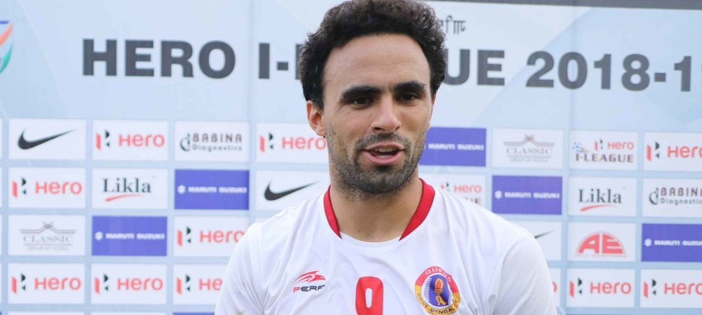

Posted at Date: March 03, 2019
Credit : রাইট স্পোর্টস ওয়েব ডেস্ক
ইস্টবেঙ্গলের স্বপ্ন বাঁচিয়ে রাখলেন এসকেদা, খেতাবি লড়াই ৯ মার্চ

স্বপ্ন বেঁচে থাকল ইস্টবেঙ্গলের। বাঁচিয়ে রাখলেন এনরিকে এসকেদা, ম্যাচের একমাত্র গোলে। মিনার্ভা পাঞ্জাব এফসি-কে হারিয়ে খেতাবি লড়াই লিগের শেষ দিন, ৯ মার্চ, পর্যন্ত জিইয়ে রাখল ইস্টবেঙ্গল। আগামী শনিবার কোঝিকোড় বা কোয়েম্বাতোর, শেষ হাসি হাসবে ইস্টবেঙ্গল বা চেন্নাই সিটি এফসি। চাপ এবং টানটান উত্তেজনা! ইস্টবেঙ্গলের দরকার ছিল জয়। গতবারের চ্যাম্পিয়ন মিনার্ভা পাঞ্জাব এফসি-র বিরুদ্ধে। তিন পয়েন্ট পেয়ে পৌঁছে গেল ৩৯ পয়েন্টে, ১৯ ম্যাচ খেলে। সমসংখ্যক ম্যাচে চেন্নাই সিটি এফসি-র পয়েন্ট ৪০। এক পয়েন্ট এগিয়ে আছে চেন্নাই। শেষ ম্যাচে ইস্টবেঙ্গলকে চ্যাম্পিয়ন হতে হলে জিততে তো হবেই গোকুলম কেরালা এফসি-র বিরুদ্ধে, ইএমএস কর্পোরেশন স্টেডিয়াম, কোঝিকোড়ে, জওহরলাল নেহরু স্টেডিয়াম, কোয়েম্বাতোরে, চেন্নাইকেও পয়েন্ট হারাতে হবে। দু’দলের ফুটবলাররাই সাংঘাতিক চাপে থাকবেন, সন্দেহ নেই।
ম্যাচের নায়ক লালদানমাউইয়া রালতের পাস ধরে ৭৫ মিনিটে গোল করেছিলেন এসকেদা। চেন্নাইয়ের সান্দ্রো রোদরিগেজ এবং নিজের দলের জবি জাস্টিনকে ধরে ফেলেছিলেন, এবারের আই লিগে নিজের নবম এবং আপাতত সবচেয়ে গুরুত্বপূর্ণ গোলটি করে। মেহিকোর ফরোয়ার্ডের শুরুটা দুর্দান্ত। নেরোকার বিরুদ্ধে অ্যাওয়ে ম্যাচে জোড়া গোল করে, এবারের আই লিগের প্রথম ম্যাচে। মাঝে চোট পেয়ে দীর্ঘদিন বাইরে। কোচ আলেখান্দ্রো মেনেন্দেজ তবুও ছেড়ে দেননি। চোটমুক্ত হয়ে ফিরে এসে সেই আস্থার মর্যাদা দিয়েছেন এসকেদা। শেষ ম্যাচেও গোলের জন্য তাঁর দিকেই তাকিয়ে থাকবে লালহলুদ জনতা। প্রথমার্ধে একবার এগিয়ে যেতে পারত ইস্টবেঙ্গল। ৪০ মিনিটে তোনি দোবালের ক্রসে হেড করেছিলেন খাইমে সানতোস। বল ফিরে এসেছিল পোস্টে লেগে। আই লিগে ইস্টবেঙ্গলের ভাগ্য কি আবারও পঞ্চকুলার তাউ দেবিলাল স্টেডিয়ামেই আটকে দেবে খেতাবি অভিযান, ভাবনা শুরু। আক্রমণে বারবার এলেও গোলমুখ খুলে ফএলা বলতে যা বোঝায়, ততটা পারেনি ইস্টবেঙ্গল। লালদানমাউইয়া একবার মাঝমাঠ থেকে শট নিয়েছিলেন মিনার্ভার গোলরক্ষক আর্শদীপ সিংকে এগিয়ে থাকতে দেখে। কোনওরকমে কর্নারের বিনিময়ে বাঁচিয়ে দেন আর্শদীপ। কিন্তু, এসকেদার গোলের সময় তাঁর কিছু করার ছিল না। আলেখান্দ্রো নিশ্চয়ই হাত কামড়াচ্ছেন এখন। ঘরের মাঠে চার্চিল ব্রাদার্স এবং আইজল, দুটি দলের বিরুদ্ধেই ১-১, লিগের ১৬ ও ১৭তম ম্যাচে। ওই দুটি ম্যাচ জিতলে ড্যাংড্যাং করে খেতাব নিয়ে ফিরতে পারতেন এসকেদা, সানতোস, জনি আকোস্তারা। স্পেনীয় কোচ অবশ্য বহুবার বলেছিলেন, মার্চ মাসেই দেখতে চাইবেন অবস্থান। আপাতত দ্বিতীয় সেখানে। তাঁকে এবং তাঁর দলকে সেই জায়গায় নিয়ে যাওয়ার ক্ষেত্রে অবদান রইল সালাম রঞ্জন সিংয়েরও, নির্বাসিত বোরখা গোমেজের জায়গায় যিনি বেশ ভালই খেললেন রবিবার মিনার্ভার বিরুদ্ধে।
চার্চিল ব্রাদার্সের বিরুদ্ধে গোয়ার তিলক ময়দানে জিততে পারলেই খেতাব জিতে নিতে পারত চেন্নাই সিটি এফসি। তেমন ভেবে ম্যাচের আগে ‘বন্ধু’ চেন্নাই-মালিককে অভিনন্দন জানিয়ে টুইট করেছিলেন মিনার্ভা-মালিক রনজিৎ বাজাজ। ফুটবল অবশ্য আবারও চোখে আঙুল দিয়ে দেখিয়ে দিল, কিছুই ধরে নেওয়ার উপায় নেই। উল্টে, এখন বন্ধুর চেন্নাইকে হারাতে সর্বস্ব দিয়ে লড়তে হবে মিনার্ভাকে, শেষ ম্যাচে। এমনকি, চেন্নাইকে খেতাব থেকে বঞ্চিতও করতে পারে বাজাজের দল! আই লিগ, এই কারণেই, দেশের সেরা। তবুও, মিনার্ভা-ইস্টবেঙ্গল ম্যাচের সরাসরি সম্প্রচার হল না টেলিভিশনে। ফুটবলপ্রেমীরা হুমড়ি খেয়ে পড়লেন মোবাইলে, ম্যাচের ‘লাইভ স্ট্রিমিং’ দেখতে। দেশের অন্য ফ্র্যাঞ্চাইজি লিগ-কাম-কাপ, আর্থিক-প্রশাসনিক এবং সম্প্রচারের সব রকমের বাজারি-সহায়তা পেয়েও, জনপ্রিয়তায় পৌঁছতে পারল না যার ধারেকাছে!
Top Stories

Calcutta Sports Journalists' Club requests the pleasure of your company at its annual awards functionMore...

Jasprit Bumrah has been declared fit and he will now be available for selection for India's third Test against England at Trent Bridge. More...

Ronaldo has increased Juventus' standing among Europe's elite. More...